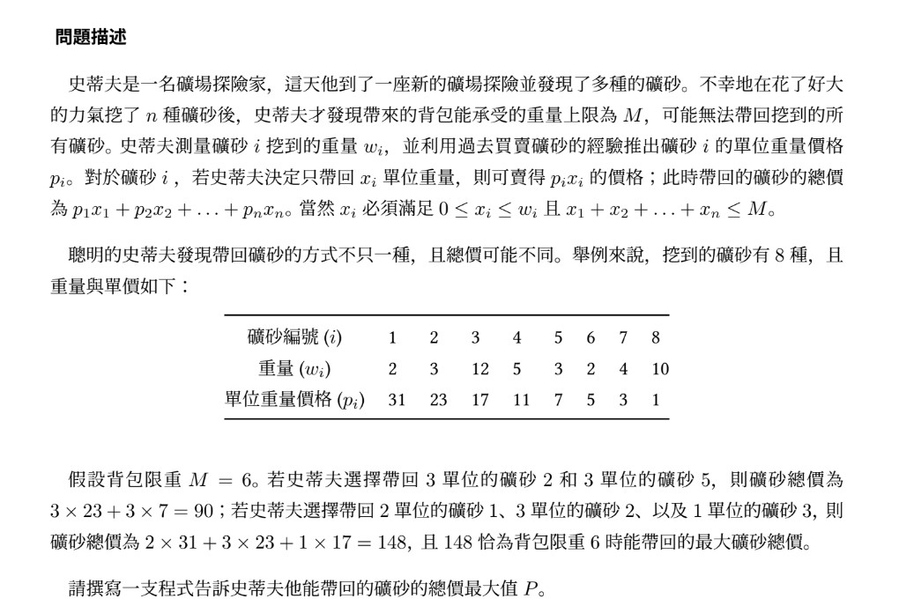

Greedy
Greedy比較算是是一種簡單的策略，就是一直選當下最好的選項。
要注意的是，局部最優不一定會是全局最優。所以在Greedy的時候務必要證明它的正確性，在比賽中如果沒有想法也可以猜猜看Greedy是對的，搞不好就矇到了呢。
它的應用非常廣，有時看起來複雜的題目猜Greedy就過了，但就是事後如果想證明可能就比較複雜。
(不過說真的，Greedy是錯的是比較常見的狀況，但猜一下不虧)
但筆者的資歷較淺，暫時無法提出難的Greedy題目，Sorry。
歐對 我想起來了，Dijkstra也算是一種Greedy吧
常見的Greedy舉例
我在這邊看到一些我看到的Greedy東東好了。
能者多勞
題目:
給你\(n\)台機器的單"生產一單位的資料所花的時間" \(m_1,m_2,...,m_n\)和\(n\)堆要處理的資料\(t_1,t_2,...,t_n\) ，我們可以任意switch資料的位子，求要怎麼換使得罪快處理完?(假設機器全開，機器很正常(?)。一堆一堆的資料不能分割)
很顯然我們需要能者多勞，處理快的人處理多一點，慢的就做少一點事，這應該很顯然吧。
正確性 ? 這其實就是排序不等式 !
連續背包問題
直接放圖吧

這個Greedy策略是顯然的。
(某些)硬幣問題
一樣，硬幣問題非常經典。
題目類似給你一些硬幣跟面額，能不能組成某個金額。
有一種Greedy想法是: 先一直拿大的面額硬幣再嘗試用小的填滿。
但是不一定是正確的，我記得如果Greedy要是對的要有條件(?)，但是那太複雜了，我還沒深究。
正確做法應該是動態規劃
線段覆蓋最大值問題
這個很經典，也很多變種。
給你 \(n\) 個線段的頭跟尾。請問最多能取出幾個線段，內部互不重疊?
以下我們約定一下術語: 假設那些線段被放在數線上，每個線段都有一個頭跟尾，頭<尾
然後OK的線段是指沒有被選到且與當前所選線段沒有重合的線段。
這個感覺有直覺的想法:
-
枚舉，你，左轉離開謝謝。 -
每次取都取沒重疊且長度越短的線段越好因為數大便是美?
-
先選擇左端點最小的線段，每當選擇完一個線段後，選之後所有OK的線段中左端點最小的?
-
先選擇右端點最小的線段，之後段每當選擇完一個線段後，選之後所有OK的線段中右端點最小的?
因為策略那麼多畢竟有錯的嘛(???) 所以嘗試構造反例看看吧
-
For策略1，[0,3],[2,4],[3,6]就能輕易否定此策略。
-
For策略2，[0,10],[2,5],[6,8]，爆炸
-
For策略3，...等等策略3我怎麼構不出反例?
構不出來不是你的問題， 因為策略3就是正確的!
Why?證明?
其實這題的證明蠻不像數學的(?)
證明: 假設我們在某一次選擇"之後所有OK的線段中右端點不是最小的"，那顯然再選擇它之後，再下一步可以選擇的OK線段必定\(\le\)剛開始就選最右端點最小的，所以只要退化成小於就是爛的，證畢。因為若選擇"右端點不是最小的"後再選下一步時OK的線段的數量\(=k\)，那麼我們不如開始就選右端點最小的Case，因為我右端點小，一定能把那\(k\)個選項通通選起來，而且搞不好在最小跟次小的右界之間可能會有線段可以選，只會更好，不會更爛。